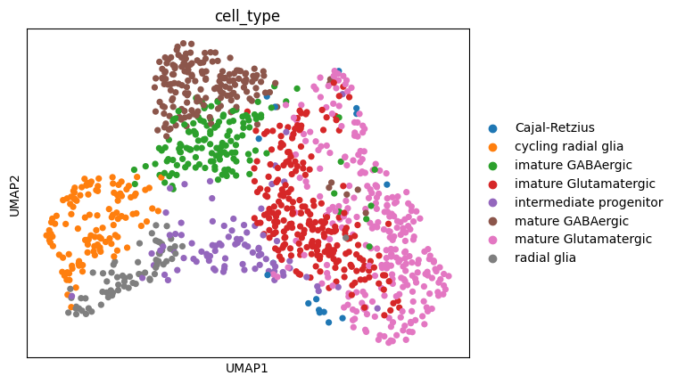
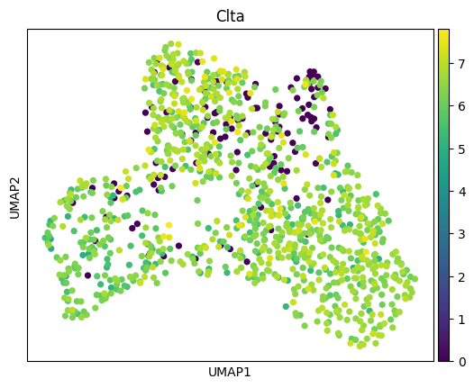
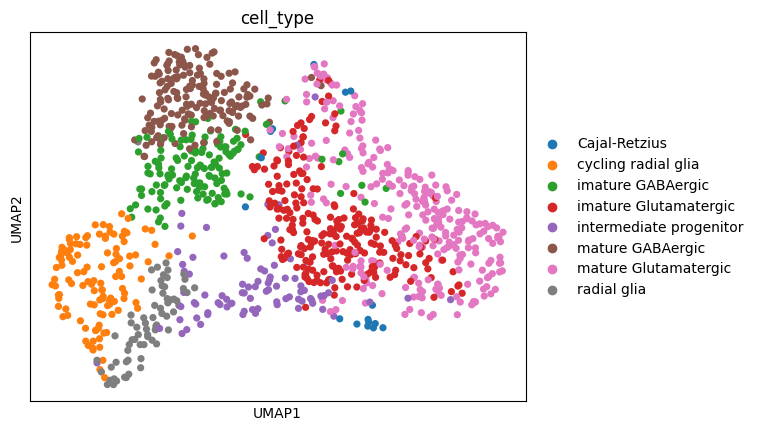
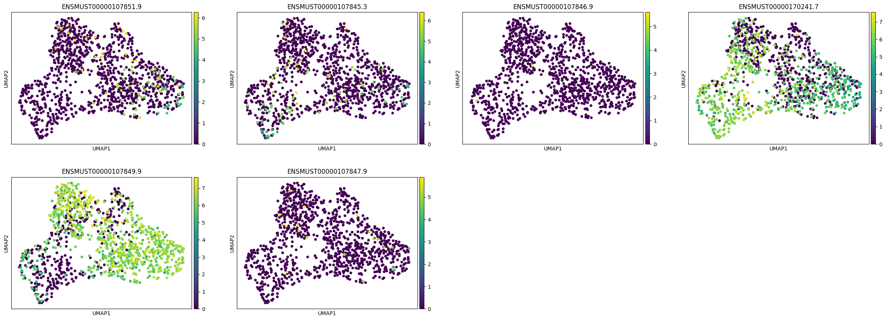
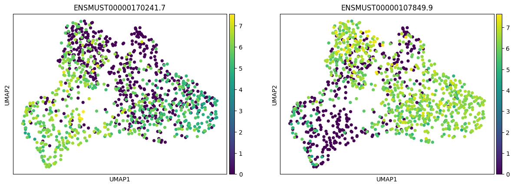
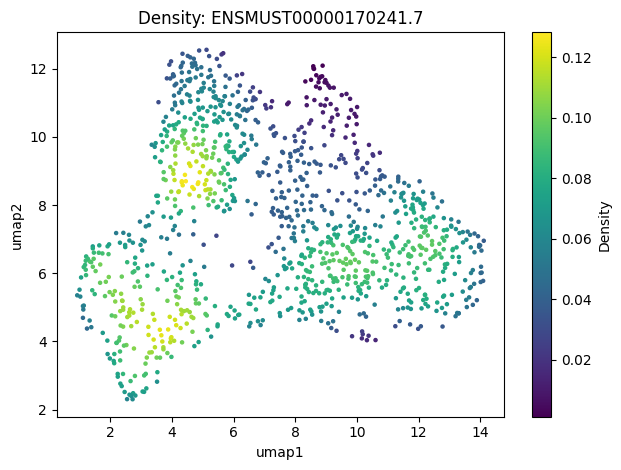
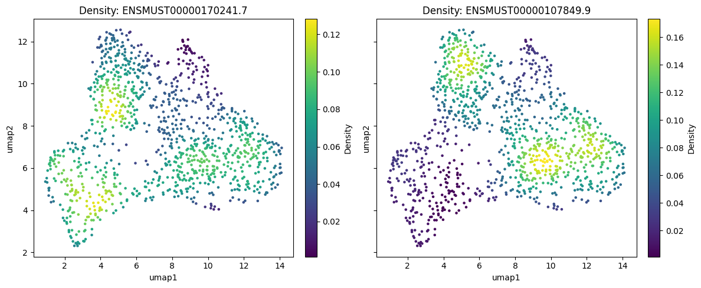
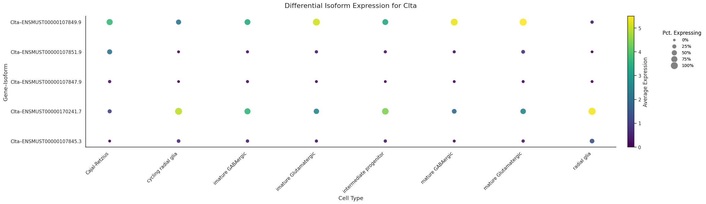
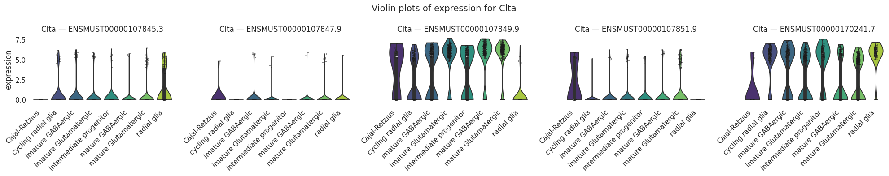

from allos.readers_tests import *
from allos.preprocessing import subset_common_cells, transfer_obsVisualizations
This module is dedicated to visualizing single-cell RNA sequencing data, enhancing interpretability and insights across diverse datasets. It offers essential tools for data representation, exploration, and presentation, enabling effective analysis within the Allos framework.
combined_mouse_data = process_mouse_data()
🔎 Looking for file at: /data/analysis/data_mcandrew/Allos_new/allos_env/lib/python3.9/site-packages/allos/resources/e18.mouse.clusters.csv
✅ File found at: /data/analysis/data_mcandrew/Allos_new/allos_env/lib/python3.9/site-packages/allos/resources/e18.mouse.clusters.csv
✅ File already exists at: /data/analysis/data_mcandrew/Allos_new/allos_env/lib/python3.9/site-packages/allos/resources/data/mouse_1.txt.gz
🔄 Decompressing /data/analysis/data_mcandrew/Allos_new/allos_env/lib/python3.9/site-packages/allos/resources/data/mouse_1.txt.gz to /data/analysis/data_mcandrew/Allos_new/allos_env/lib/python3.9/site-packages/allos/resources/data/mouse_1.txt...
✅ Decompression complete.
Test data (mouse_1) downloaded successfully
✅ File already exists at: /data/analysis/data_mcandrew/Allos_new/allos_env/lib/python3.9/site-packages/allos/resources/data/mouse_2.txt.gz
🔄 Decompressing /data/analysis/data_mcandrew/Allos_new/allos_env/lib/python3.9/site-packages/allos/resources/data/mouse_2.txt.gz to /data/analysis/data_mcandrew/Allos_new/allos_env/lib/python3.9/site-packages/allos/resources/data/mouse_2.txt...
✅ Decompression complete.
Test data (mouse_2) downloaded successfully/data/analysis/data_mcandrew/Allos_new/allos_env/lib/python3.9/site-packages/anndata/_core/anndata.py:1754: UserWarning: Observation names are not unique. To make them unique, call `.obs_names_make_unique`.
utils.warn_names_duplicates("obs")import scanpy as sc
from allos.preprocessing import get_sot_gene_matrixmouse_data_gene = get_sot_gene_matrix(combined_mouse_data)
sc.pp.normalize_total(mouse_data_gene,target_sum = 1e6)
sc.pp.log1p(mouse_data_gene)
sc.pp.neighbors(mouse_data_gene)
sc.tl.umap(mouse_data_gene)
sc.pl.umap(mouse_data_gene, color = 'cell_type')/data/analysis/data_mcandrew/Allos_new/allos_env/lib/python3.9/site-packages/scanpy/tools/_utils.py:41: UserWarning: You’re trying to run this on 12561 dimensions of `.X`, if you really want this, set `use_rep='X'`.
Falling back to preprocessing with `sc.pp.pca` and default params.
warnings.warn(
/data/analysis/data_mcandrew/Allos_new/allos_env/lib/python3.9/site-packages/tqdm/auto.py:21: TqdmWarning: IProgress not found. Please update jupyter and ipywidgets. See https://ipywidgets.readthedocs.io/en/stable/user_install.html
from .autonotebook import tqdm as notebook_tqdm
sc.pl.umap(mouse_data_gene, color = 'Clta')
sc.pp.normalize_total(combined_mouse_data,target_sum = 1e6)
sc.pp.log1p(combined_mouse_data)
sc.pp.neighbors(combined_mouse_data)
sc.tl.umap(combined_mouse_data)
sc.pl.umap(combined_mouse_data, color = 'cell_type')/data/analysis/data_mcandrew/Allos_new/allos_env/lib/python3.9/site-packages/scanpy/preprocessing/_normalization.py:207: UserWarning: Received a view of an AnnData. Making a copy.
view_to_actual(adata)
/data/analysis/data_mcandrew/Allos_new/allos_env/lib/python3.9/site-packages/scanpy/tools/_utils.py:41: UserWarning: You’re trying to run this on 31986 dimensions of `.X`, if you really want this, set `use_rep='X'`.
Falling back to preprocessing with `sc.pp.pca` and default params.
warnings.warn(
/data/analysis/data_mcandrew/Allos_new/allos_env/lib/python3.9/site-packages/fastcore/docscrape.py:230: UserWarning: Unknown section Parameters:
else: warn(msg)
/data/analysis/data_mcandrew/Allos_new/allos_env/lib/python3.9/site-packages/fastcore/docscrape.py:230: UserWarning: Unknown section Returns:
else: warn(msg)plot_transcripts
plot_transcripts (adata, gene_id=None, transcripts=None)
Plot the UMAP with the specified transcripts or transcripts associated with the given gene ID.
plot_transcripts(combined_mouse_data, gene_id='Clta')
plot_transcripts(combined_mouse_data, transcripts=['ENSMUST00000170241.7','ENSMUST00000107849.9'])
plot_density
plot_density (adata, feature, basis='umap', adjust=1.0, cmap='viridis')
Simple scatterplot colored by the weighted density of feature.
calculate_density
calculate_density (adata, feature, basis='umap', adjust=1.0, map_to_cells=True)
1) Extract coordinates from adata.obsm[f”X_{basis}”]. 2) Extract expression vector for feature. 3) Run the weighted KDE. 4) If map_to_cells=True, return per-cell densities; else return the full grid.
get_dens
get_dens (points, dens)
Map each 2D point to the approximate density in dens["z"]. This mimics the R code that uses findInterval. points: shape (n_cells, 2) dens : dict with ‘x’, ‘y’, ‘z’, from wkde2d Returns a 1D np.array of densities (one per row in points).
wkde2d
wkde2d (x, y, w=None, h=None, adjust=1.0, n=100, lims=None)
Python equivalent of your R ‘wkde2d’ function: x, y: coordinates (1D arrays) for each observation. w : weight vector (same length as x, y). h : tuple or scalar for bandwidth in the x/y directions (if None, use approximate). adjust: bandwidth adjustment scalar. n : number of grid points in each direction. lims: [x_min, x_max, y_min, y_max] to define the grid. Returns a dict with {‘x’: gx, ‘y’: gy, ‘z’: Z}, analogous to R’s list(x=…, y=…, z=…).
normal_reference_bandwidth
normal_reference_bandwidth (x)
Approximate the normal-reference (Silverman’s) bandwidth for 1D data. R’s ks::hpi uses a more sophisticated pilot estimation, but this is often ‘close enough’ for large data.
plot_density(combined_mouse_data, 'ENSMUST00000170241.7', basis= 'umap')
plot_density_multi
plot_density_multi (adata, features, basis='umap', adjust=1.0, cmap='viridis')
Plot one or multiple features’ density on the specified 2D embedding. - If ‘features’ is a single string, makes one subplot. - If ‘features’ is a list of strings, makes multiple side-by-side subplots.
plot_density_multi(
adata=combined_mouse_data,
features=['ENSMUST00000170241.7', 'ENSMUST00000107849.9'],
basis='umap'
)
plot_transcript_exspression_dotplot
plot_transcript_exspression_dotplot (adata, gene_id, cell_labels_column='cell_type', top_n=5)
*Plot isoform expression for a selected gene across cell types, with dot color = average expression, and dot size = percent of cells expressing. Two legends: a colorbar for average expression, and a bubble-size legend for pct_expressing.
DIFFERENT LAYOUT APPROACH: - We use a single figure+axes with plt.tight_layout(rect=[…]) to reserve space on the right. - We place the bubble-size legend as an “in-figure” legend using bbox_to_anchor, so it won’t be cut off.*
plot_transcript_exspression_dotplot(combined_mouse_data, gene_id='Clta', top_n=5)
plot_transcript_expression_violin
plot_transcript_expression_violin (adata, gene_id, cell_labels_column='cell_type', top_n=5, figsize_per_isoform=(4, 4))
Plot isoform expression for a selected gene across cell types, using violin plots (with each cell’s expression as a point).
| Type | Default | Details | |
|---|---|---|---|
| adata | AnnData | Single-cell AnnData object with .obs (cells) and .var (features). | |
| gene_id | str | The gene ID to filter isoforms by (adata.var[‘geneId’]). | |
| cell_labels_column | str | cell_type | Column name in adata.obs specifying the cell type or cluster label. |
| top_n | int | 5 | If not None, keeps only the top-n isoforms by overall mean expression. |
| figsize_per_isoform | tuple | (4, 4) | Width and height (in inches) for each isoform subplot. |
plot_transcript_expression_violin(combined_mouse_data, gene_id='Clta', top_n=5)
import nbdev; nbdev.nbdev_export()